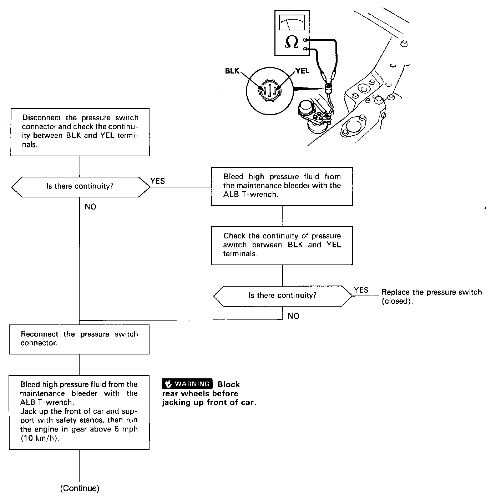
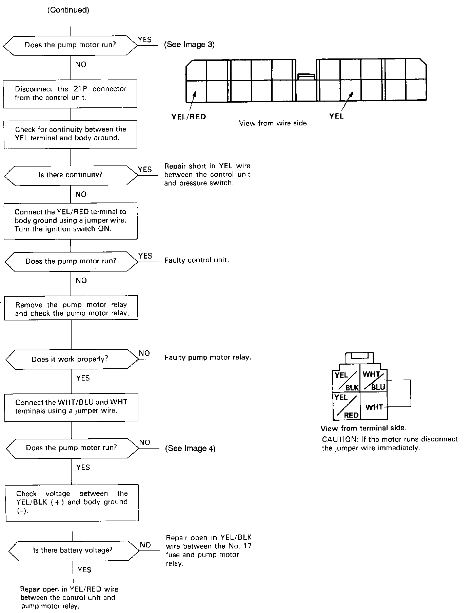
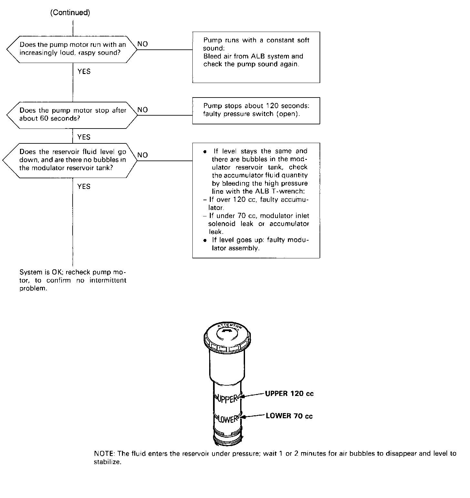
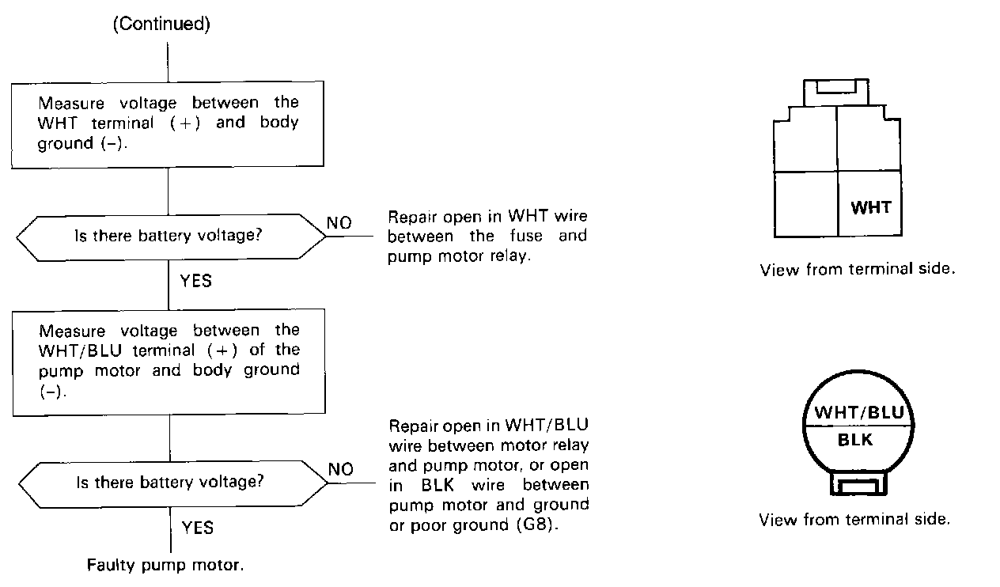

DTC 1




Problem Code 1: Hydraulic Controlled Components.
NOTE: The LED does not blink when the following failures occur.
- The contact points of the motor relay remain closed (The motor runs continuously even after the ignition key is removed).
- YEL/RED lead is shorted or the control unit is internally shorted (The motor stops when the ignition switch is turned off).
Pre test steps:
- Check ALB 40A Fuse.
- Check all brake system hoses and pipes (low and high pressure) for signs of leaking, bending or kinking.
- Check reservoir fluid level, and if necessary, fill to the MAX level.